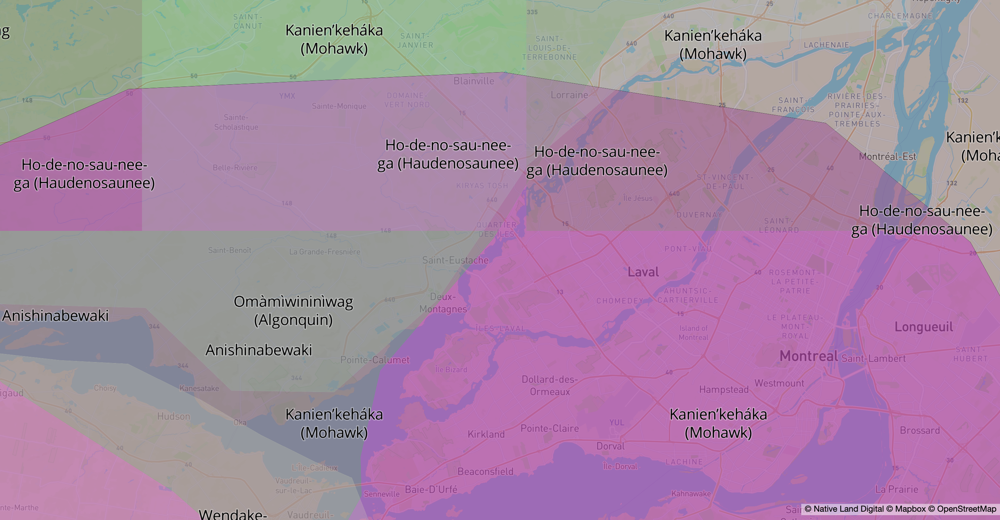
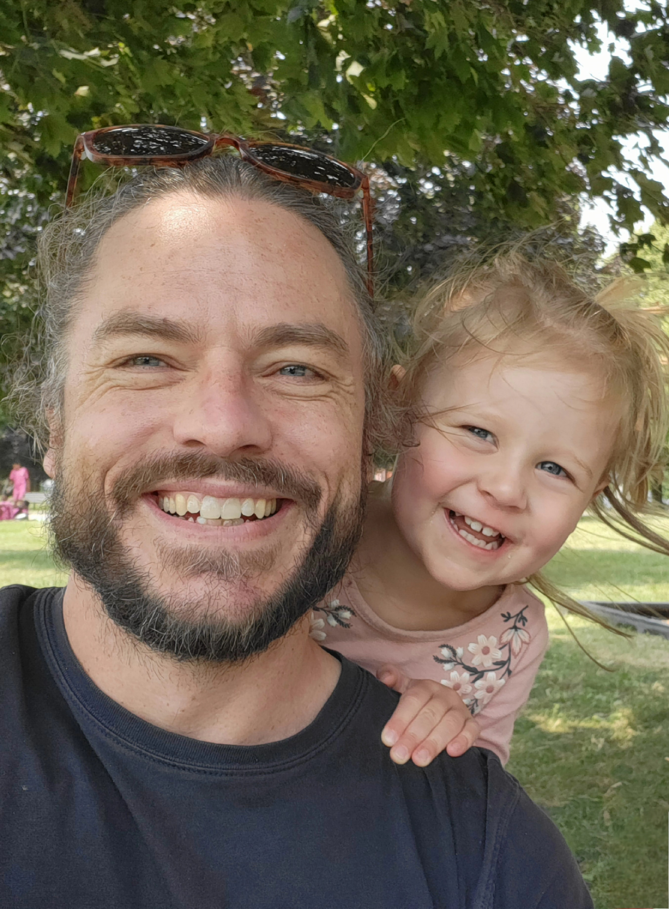

Workshop for l’Appui
Contact: jeffrey.mccrossin@gmail.com
2025-02-09
Solution-Focused Coaching with Caregivers
A Family-Centred, Collaborative Approach
Full-Day Workshop (9:30-4:30)
 Traditional territories map. Source: Native Land Digital.
| Time | Sequence | Focus |
|---|---|---|
| 9:30-10:00 | 1 | Scope and intro |
| 10:00-10:30 | 2 | SFC assumptions |
| 10:45-11:00 | Break | 15-minute break |
| 11:00-11:45 | 3 | SFC skills (part 1) |
| 12:00-1:00 | Lunch | 60-minute lunch |
| 1:00-2:15 | 3 | SFC skills (part 2) |
| 2:15-2:30 | Break | 15-minute break |
| 2:30-3:15 | 4 | Family partnering and joining |
| 3:20-4:00 | 5 | Practice, integration, and transfer |
| 4:05-4:30 | 6 | Final reflections and closing |

We will learn SFC in a practical sequence.
1. Stance How we position ourselves in conversation
2. Assumptions The core ideas that guide our questions
3. Approaches Recurring ways of working (exceptions, coping, scaling)
4. Techniques (application) How to put this into action in real conversations
Goal: move from understanding to usable practice.
In team debrief, one responder says: “Honestly, she sounds unmotivated and resistant. We should just send resources by email and close unless she calls back.”
Next Steps: How can we apply SFC assumptions to this case? (Take some notes!)
9 key assumptions guide conversations that:
Focus on what people want instead, not on fixing what’s wrong.
Pay attention to what already works and when problems are less present.
Assume clients have skills, resources, and partial solutions.
Support small, meaningful steps rather than big fixes.
Use different kinds of conversations to build solutions.
Direction (1-3)
1
Focus on Solutions
2
Look Forward
3
Do More of What Works
Resources (4-6)
4
Problems Are Not Constant
5
Building on Existing Skills
6
Clients Have Solutions
Change (7-9)
7
Small Steps Matter
8
Solutions Don’t Have to Match the Problem
9
Different Conversations Create Change
Direction (1-3)
1
Focus on Solutions
2
Look Forward
3
Do More of What Works
Resources (4-6)
4
Problems Are Not Constant
5
Building on Existing Skills
6
Clients Have Solutions
Change (7-9)
7
Small Steps Matter
8
Solutions Don’t Have to Match the Problem
9
Different Conversations Create Change
In team debrief, one responder says: “Honestly, she sounds unmotivated and resistant. We should just send resources by email and close unless she calls back.”
Next Steps: How can we apply SFC assumptions to this case?
Let’s take 15 minutes.
Coach: Emma, what would you like to see happen from our time together?
Caregiver: I want more balance. I’m overwhelmed and don’t know where to turn.
Coach: Can you recall moments, even briefly, when things felt more manageable?
Caregiver: Home care support helped, but it was hard to access.
Coach: What difference did those few hours make for you?
Caregiver: I felt less stressed and more like myself.
Coach: If you had more moments like those, what might that look like?
Caregiver: I guess I’d have more hours of home support but I’ll have to fight for them… I mean, even if my brother came over once a week that would give me a break.
Client: [talks in circles about the problem]
Coach (validate + pivot): I can really hear how much of a challenge this is. Can we try a different angle?
Follow-up:
Option A (exception): “Can you tell me about moments when this problem does not show up?”
Option B (intensity): “When it does show up, when is it less intense?”
Case Prompt (Caregiver)
Instructions
Coach, Caregiver, Observer.Role-play (3 min): validate, then ask exception/what-works questions.Coach: name 1 exception + 1 next step.Observer: capture shifts from “always/never” to specifics.Debrief (4-5 min): best question, exception, next step.Coach: I understand caregiving can be incredibly challenging. When it feels overwhelming, how do you usually cope?
Caregiver: Sometimes I take a short walk, or I call a friend. It doesn’t always help, but it gives me a little break.
Coach: Those sound like valuable strategies. How effective are they in reducing your stress?
Caregiver: They help a bit, but I often feel guilty for taking time for myself.
Coach: What if you could take these breaks without feeling guilty? What might that look like?
Caregiver: I guess reminding myself that taking care of my needs helps me be a better caregiver.
Coach: That is a great perspective. How might you incorporate these breaks more regularly so they become a guilt-free part of caregiving?
“Sometimes people tell me that while they were waiting for service, or after they finally booked the appointment, that something changed. Something got a little better.”
“Can you tell me what changed for you and your family? Even just a little?”
Coach: On a scale of 1-10, where 1 is the worst and 10 is much easier to manage, where are you today?
Client: Maybe a 5.5.
Coach (Option A): Why 5.5 and not 5?
Coach (Option B): Why 5.5 and not 0?
Coach (option A): What would be happening in your life when you notice you are at a solid 6?
Coach (option B): What will you notice when you find yourself at a 10?
Coach (option C): At what number would you be satisfied? What would be happening then?
Coach (relational): What would others notice about you?
Coach (relational): What number might your partner/mother/child guess you are at today?
Coach: So, you’d be satisfied with an 8. What would be happening then?
Client: My husband would be drinking less.
Coach: Right, if he were drinking less you’d notice a big difference. What difference would that make to you if he were to be sober?
Coach focus: Acknowledge and redirect to client meaning, and shift from the absence of drinking to the presence of sobriety.
Coach: Who would be the first to notice that you’re at an 8?
Client: Probably my son.
Coach: And what would he notice?
Client: He’d see me smiling more.
Coach (option A): Smiling more [repeats client’s words for emphasis].
Option A [turns to son]: Do you think she’s right? Would you be the first to notice?
Option A [follow-up]: What do you think you might notice in her when she’s at an 8?
Option A [follow-up]: When she’s at an 8, what number might you find yourself at?
Coach (option B): Smiling more [repeats client’s words for emphasis].
Coach [to client]: And when he notices you smiling more, what difference will that make to you?
Client: That would mean everything. I’d feel like a better mom. Less guilty.
Return at 1:00 PM.
| # | Assumption Title |
|---|---|
| 1 | Focus on Solutions |
| 2 | Look Forward |
| 3 | Do More of What Works |
| 4 | Problems Are Not Constant |
| 5 | Building on Existing Skills |
| 6 | Clients Have Solutions |
| 7 | Small Steps Matter |
| 8 | Solutions Don’t Have to Match the Problem |
| 9 | Different Conversations Create Change |
The real work happens in the follow-ups:
Coach: Imagine you go to bed tonight and while you’re sleeping, a miracle happens. When you wake up, the challenges you’re facing as a caregiver are resolved. What’s the first sign you’ll notice that tells you the miracle occurred?
Caregiver: I guess, I’d wake up feeling rested for once. I’d be able to enjoy my morning coffee in peace, without feeling rushed or worried.
Coach: That sounds peaceful. What else would be different in your day?
Caregiver: I’d have time to take care of myself, maybe exercise or read. And I’d feel more patient and present with my loved one.
Coach: How would these changes make you feel about your caregiving role?
Caregiver: More balanced and less stressed, definitely. I’d feel like I’m not just surviving, but actually living.
Coach: Let’s explore how we can move towards that feeling. What small steps can you take today that align with this “miracle” scenario?
Goal: Move from preferred future -> concrete signs -> measurable next step.
Case prompt (Caregiver):
“I’m constantly on edge with my dad’s evening routine. Nights feel tense, and I end most days exhausted. I just want things to feel calmer at home.”
Coach and Caregiver (switch roles if time permits).Coach task
Question bank
Coach task (3 min)
Debrief prompts (3 min)
Brief scenario:
A caregiver says: “This week was rough, but I still got my son to school three times and managed one calm bedtime.”
Let’s take 15 minutes.
Client: I am exhausted. Every day feels like too much, and I feel like if I drop one thing, everything will fall apart.
Coach: You’re really at your wits end. It feels like a breaking point for you because you have so much on your plate and that you need to manage everything on your own.
Client: I’ve been trying to hold everything together for months, and I honestly do not know how much longer I can keep this up.
Coach: It makes sense that you’re feeling burnt out when you’ve been doing it all on your own for so long and you don’t see any other way to keep afloat.
Client: I keep looking for another option, but every path feels blocked and it is hard not to feel defeated.
Coach: I’ve never had that same pile-up of stressors to deal with, but I can imagine that it must be discouraging when you’re faced with all of this pressure and you can’t really see any alternative.
Coach: Did I get that right?
Coach, Caregiver, Observer).A. Early Childhood
B. Aging Care
Coach (5 min)
Observer focus
Debrief (5 min)
Thank you for your practice and presence
Contact: jeffrey.mccrossin@gmail.com